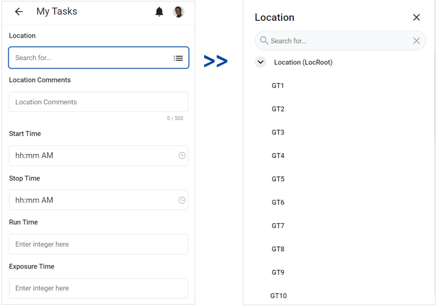
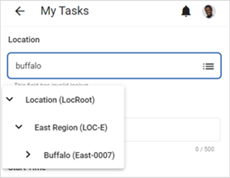

If a field has a related tree selector, there will be a Tree Selector icon to the right. When you click the icon, a list of tree nodes will display. To locate a tree node, expand the parent node, or use the search bar to search for it. Once you select a tree node, the tree selector will close, and the selected node will display in the field.

You can also search for a tree node by typing it in the field. A filtered list of tree nodes that match your search will display below the field. If you select a tree node from the search results, it will display in the field.

You can also perform a wildcard search to locate a tree node.